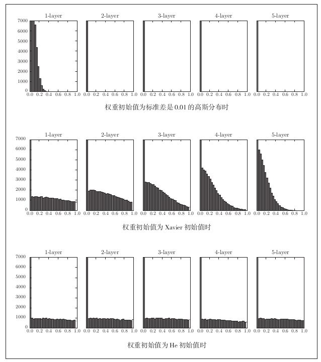
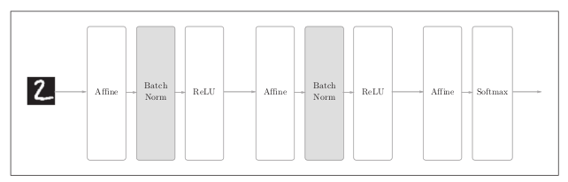
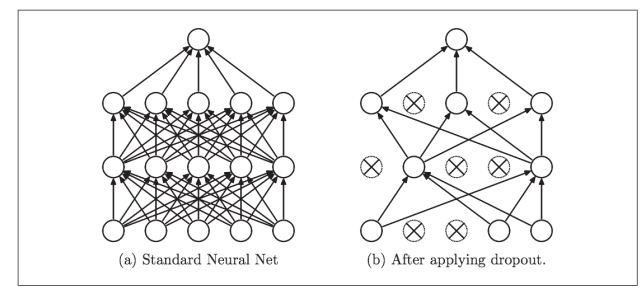

5. 与学习相关的技巧¶
5.1. 参数的更新¶
神经网络学习的目的是找到使损失函数的值尽可能小的参数。
SGD
\[\pmb{W} \leftarrow \pmb{W} - \eta\frac{\partial{L}}{\partial\pmb{W}}\]
将SGD实现为一个Python的类
class SGD: def __init__(self, lr=0.01): self.lr = lr def update(self, params, grads): for key in params.keys(): params[key] -= self.lr * grads[key]使用SGD，可以按如下方式进行神经网络的参数更新
network = TwoLayerNet() optimizer = SGD() for i in range(10000): ... x_batch, t_batch = get_mini_batch(...) # mini_batch grads = network.gradient(x_batch, t_batch) params = network.params optimizer.update(params, grads) ...SGD的缺点
如果函数的形状非均向，搜索的路径就会非常低效SGD低效的根本原因是梯度并没有指向最小值的方向
- Momentum
Momentum是在指数加权平均的基础上提出的
指数加权平均可用如下公式表示：
\[v_t=k * v_{t-1} + (1-k)w_t\]v = 0 for t in 100 v = kv + (1-k)w_tMomentum的公式表示如下：
\[\begin{split}v \leftarrow \alpha{v} - \eta\frac{\partial{L}}{\partial\pmb{W}}\\ \pmb{W} \leftarrow \pmb{w} + v\end{split}\]将Momentum实现为一个Python类
class Momentum: def __init__(self, lr=0.01, momentum=0.9): self.lr = lr self.momentum = momentum self.v = None def update(self, params, grads): if self.v is None: self.v = {} for key, val in params.items(): self.v[key] = np.zeros_like(val) for key in params.keys(): self.v[key] = self.momentum*self.v[key] - self.lr*grads[key] params[key] += self.v[key]
- AdaGrad
AdaGrad会为参数的每个元素适当地调整学习率
AdaGrad的公式如下：
\[\begin{split}\pmb{h} \leftarrow \pmb{h} + \frac{\partial{L}}{\partial\pmb{W}} \odot \frac{\partial{L}}{\partial\pmb{W}}\\ \pmb{W} \leftarrow \pmb{W} - \eta\frac{1}{\sqrt{\pmb{h}}}\frac{\partial{L}}{\partial\pmb{W}}\end{split}\]这里出现了新变量h，它保存了以前的所有梯度的平方和，在更新参数时，通过乘以其根号倒数，就可以调整学习的尺度。这意味着参数中的元素中变动较大（被大幅更新的元素的学习率会将变小）。
将AdaGrad实现为一个Python类
class AdaGrad: def __init__(self, lr=0.1): self.lr = lr self.h = None def update(self, params, grads): if self.h is None: self.h = {} for key, val in params.items(): self.h[key] = np.zeros_like(val) for key in params.keys(): self.h[key] += grads[key] * grads[key] parsms[key] -= self.lr * grads[key] / (np.sqrt(self.h[key]) + 1e-7)
- RMSprop
AdaGrad会记录过去所有的梯度平方和，而RMSprop则逐渐遗忘过去的梯度，在做加法时将新梯度的信息更多的反映出来。
- 首先计算出dw和db
- 计算出指数平均
\[\begin{split}s_{dw} = ks_{dw} + (1-k)dw^{2}\\ s_{db} = ks_{db} + (1-k)db^{2}\end{split}\]
- 更新w和b
\[\begin{split}w = w - r(dw/sqrt(s_{dw}))\\ b = b - r(db/sqrt(s_{db}))\end{split}\]
- Adam
Adam融合了Momentum和AdaGrad方法
- 算出dw，db
- 求出动量指数平均
\[\begin{split}v_{dw} = k_1v_{dw}+(1-k_1)dw\\ v_{db} = k_1v_{db}+(1-k_1)db\end{split}\]
- 求出RMPprop指数平均
\[\begin{split}s_{dw} = k_2s_{dw}+(1-k_2)dw^{2}\\ s_{db} = k_2s_{db}+(1-k_2)db^{2}\end{split}\]
- 对指数平均进行修正
\[\begin{split}v^{c}dw = v_{dw}/(1-k_1^{t})\\ v^{c}db = v_{db}/(1-k_1^{t})\\ s^{c}dw = s_{dw}/(1-k_2^{t})\\ s^{c}db = s_{db}/(1-k_2^{t})\end{split}\]
- 通过两个指数平均更新参数
\[\begin{split}w = w - r(v^{c}_{dw}/sqrt(s^{c}_{dw}+u))\\ b = b - r(v^{c}_{db}/sqrt(s^{c}_{db}+u))\end{split}\]
5.2. 权重的初始值¶
- 权重初始值能设置成0吗？
将权重初始值设置成一样的值，在误差反向传播法中，所有的权重值会进行相同的更新，拥有了对称的值（重复的值）。为防止“权重均一化”，必须随机生成初始值。
- 隐藏层激活值的分布
各层激活值的分布要求要适当的广度，通过在各层之间传递多样性的数据，神经网络就可以进行高效的学习。如果传递的是有所偏向的数据，就会出现梯度消失或“表现力受限”的问题，导致学习可能无法顺利进行。
- Xavier初始值
如果前一层的节点数为 \(n\) ，则初始值使用标准差为 \(\frac{1}{\sqrt{n}}\) 的分布
node_num = 100 # 前一层的节点数 w = np.random.randn(node_num, node_num) / np.sqrt(node_num)
- ReLU的权重初始值He
当前一层的节点数为 \(n\) ，则初始值使用标准差为 \(\sqrt{\frac{2}{n}}\) 的分布
激活函数使用ReLU时，不同权重初始值的激活值分布的变化如下图
当激活函数使用ReLU时，权重初始值使用He初始值。当激活函数为sigmoid或tanh等S型曲线函数时，初始值使用Xavier初始值。
5.3. Batch Normalization¶
Batch Norm的思路是调整各层激活值分布使其拥有适当的广度。为此，要向神经网络中插入对数据分布进行正规化的层，即Batch Normalization曾。
Batch Norm以进行学习时的nimi-batch为单位，按mini-batch进行正规化。具体而言就是使数据分布的均值为0，方差为1的正规化。如下式表示：
\[\begin{split}\begin{align} \mu_B \leftarrow \frac{1}{m}\sum_{i=1}^{m}x_i\\ \sigma^{2}_B \leftarrow \frac{1}{m}\sum_{i=1}^m{(x_i - \mu_B)}^{2}\\ \hat{x}_i \leftarrow \frac{x_i - \mu_B}{\sqrt{\sigma^{2}_B + \epsilon}} \end{align}\end{split}\]nimi-batch将输入的数据 \(\{x_1,x_2,...,x_m\}\) 变换为均值为0，方差为1的数据 \(\{\hat{x}_1,\hat{x}_2,...,\hat{x}_m\}\) 。通过将这个处理插入刀激活函数的前面（或者后面），可以减小数据分布的偏向。接着，Batch Norm会对正规化后的数据进行缩放和平移的变换：
\[y_i \leftarrow \gamma\hat{x}_i + \beta\]这里， \(\gamma\) 和 \(\beta\) 是参数。一开始 \(\gamma = 1, \beta = 0\) ，然后再通过学习调整到合适的值。
5.4. 正则化¶
- 过拟合
- 权值衰减
该方法通过在学习过程中对大的权重进行惩罚，来抑制过拟合。用符号表示的话，如果将权重记为 \(\pmb{W}\) L2范数的权值衰减就是 \(\frac{1}{2}\lambda\pmb{W}^{2}\) ，然后将这个 \(\frac{1}{2}\lambda\pmb{W}^{2}\) 加到损失函数上。这里 \(\lambda\) 是控制正则化强度的超参数。设置的越大，对大的权重施加的惩罚就越重。
- Dropout
如果网络的模型变得很复杂，只用权重衰减就难以应付了。在这种情况下，经常会使用Dropout方法。
Dropout是一种在学习过程中随机删除神经元的方法。训练时，随机选出隐藏层的神经元，然后将其删除。对于各神经元的输出，要乘上训练时的删除比例后再输出。
class Dropout: def __init__(self, dropout_ratio=0.5): self.dropout_ratio = dropout_ratio self.mask = None def forward(self, x, train_flg=True): if train_flg: self.mask = np.random.rand(*x.shape) > self.dropout_ratio return x * self.mask else: return x * (1.0 - self.dropout_ratio) def backward(self, dout): return dout * self.mask
5.5. 超参数的验证¶
- 验证数据
调整超参数时，必须使用超参数专用的确认数据。用于调整超参数的数据，一般称为验证数据。我们使用这个验证数据来评估超参数的好坏。
- 超参数的最优化
- 设定超参数的范围
- 从设定的超参数范围中随机采样
- 使用上一步中采样刀的超参数进行学习，通过验证数据评估识别精度（但是要将epoch设置的很小）
- 重复上述步骤，根据他们的识别精度的结果，缩小超参数的范围